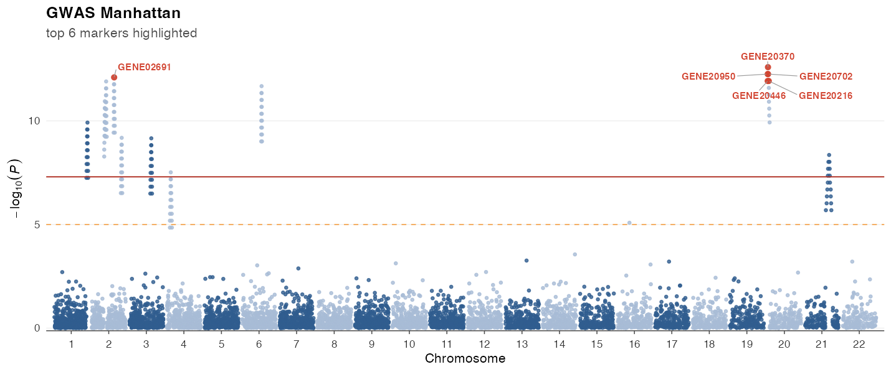
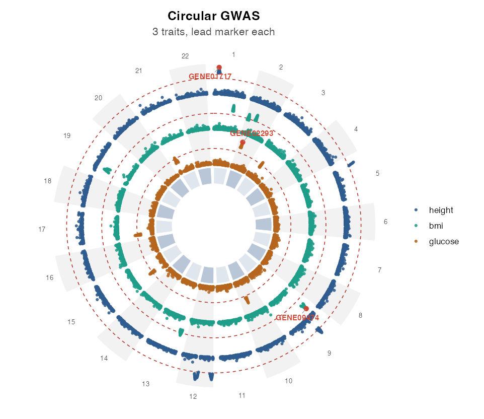
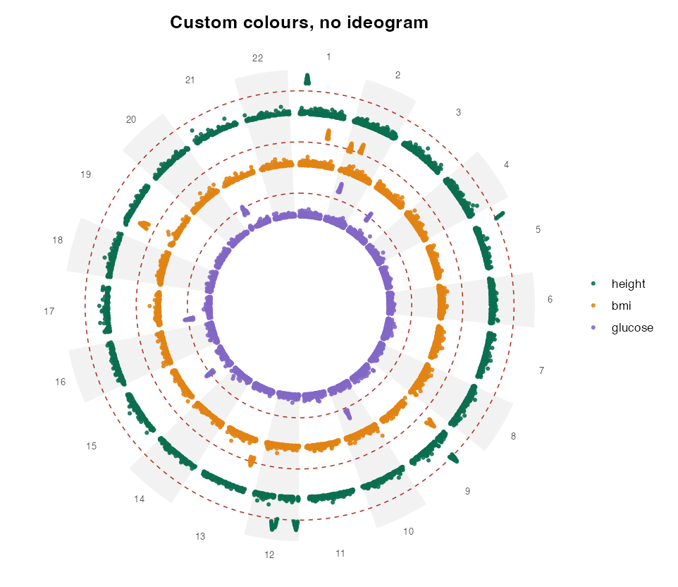
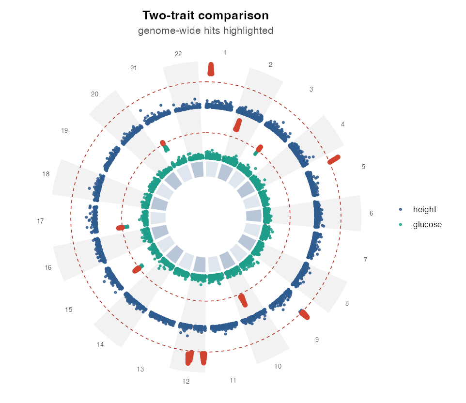
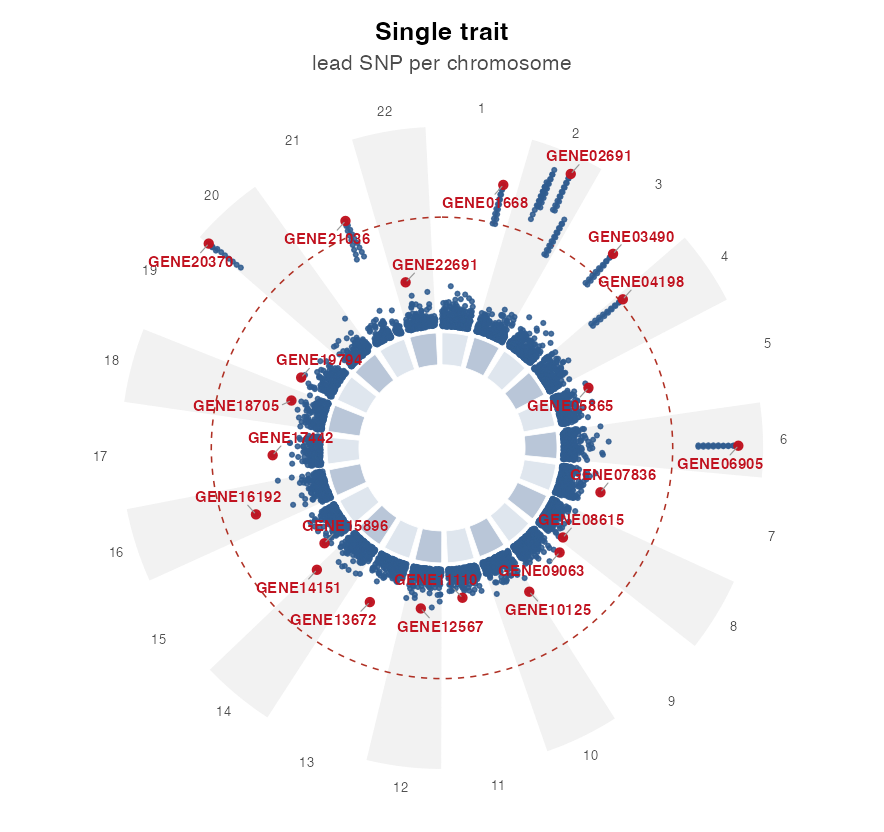
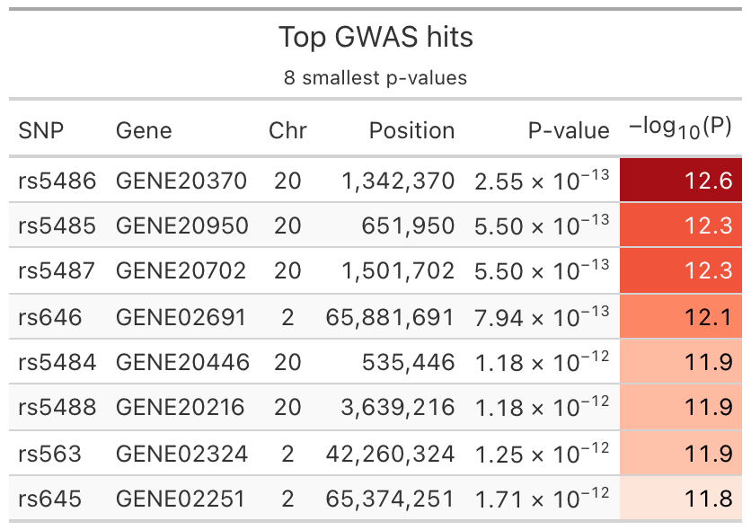

📖 Documentation & vignette: https://loukesio.github.io/gwasplot/

gwasplot is a ggplot2-based toolkit for visualising genome-wide association study (GWAS) results. It aims to make it easy to produce publication-ready and interactive figures:
- Linear Manhattan plots across the genome, with alternating chromosome colours and genome-wide / suggestive significance thresholds.
- Per-chromosome plots to zoom into a region of interest.
- Circular (CMplot-style) plots with support for multiple concentric trait rings.
- Easy top-marker highlighting — by threshold, top-N, or named SNPs/genes, with automatic labelling.
- Interactive versions via ggiraph (hover tooltips showing SNP, gene, chromosome, position and p-value).
- Companion tables of the top hits via gt, in the spirit of ggvolc.
Status: early development, but all the core pieces work: the data contract (
validate_gwas()), the Manhattan, single-chromosome and multi-ring circular plots, interactive versions viaggiraph, and thegttop-hits table. A vignette and further polish are next.
Quick start
library(gwasplot)
data(gwas_example) # single trait
data(gwas_multi) # three traits, for circular rings
# Manhattan plot, highlighting the top 6 markers
gwas_manhattan(gwas_example, highlight = highlight_top(top_n = 6))
# Zoom into a single chromosome
gwas_chromosome(gwas_example, chr = 1, highlight = highlight_top(top_n = 3))
# Circular plot with one concentric ring per trait
gwas_circular(gwas_multi, highlight = highlight_top(top_n = 1, by = "trait"))Circular plots (CMplot-style, multiple rings)
gwas_circular() arranges the chromosomes once around a circle and draws each trait as its own concentric ring (outermost = first trait).

More variations — per-ring scaling, custom colours, a two-trait comparison, and the single-trait collapse:
 |
|
 |
 |
Useful options: shared_scale = FALSE (scale each ring to its own maximum), ideogram = FALSE (drop the central chromosome band), colors (one colour per ring), and label = FALSE (recommended when highlighting many markers).
Interactive plots
Any plot becomes an interactive ggiraph widget with interactive = TRUE — hover a point to see its SNP, gene, chromosome, position and p-value:
gwas_manhattan(gwas_example, highlight = highlight_top(top_n = 6),
interactive = TRUE)
gwas_circular(gwas_multi, interactive = TRUE)Top-markers table
gwas_table() builds a publication-ready gt table of the top hits (and gwas_top() returns the same selection as a plain tibble). Because it shares the highlight_top() selection logic with the plots, a table and a figure always agree:
gwas_table(gwas_example, highlight = highlight_top(top_n = 8),
title = "Top GWAS hits")
The data contract
Every plotting function expects a tidy GWAS data frame. validate_gwas() standardises one for you — it auto-detects common column names (e.g. BP → POS, pvalue → P) and returns a clean tibble with SNP, CHR, POS, P (plus optional gene and trait).
library(gwasplot)
df <- data.frame(
marker = c("rs1", "rs2", "rs3"),
chrom = c(1, 1, 2),
bp = c(100, 200, 150),
pvalue = c(1e-8, 0.2, 3e-3)
)
validate_gwas(df)You can override detection explicitly, e.g. validate_gwas(df, p = "P_BOLT_LMM").